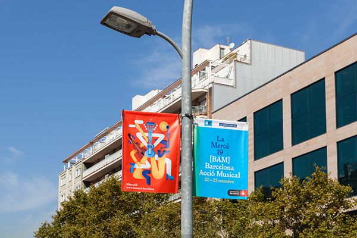
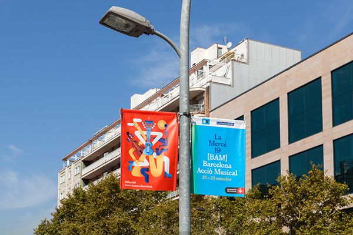

La Mercè 19
Every year on September, right when autumn begins, Barcelona celebrates La Mercè, patron saint of the city and its Festa Major. A festival of festivals. La Mercè aims to be a reflection of the city itself – enterprising, creative and inventive.
One artist is chosen each year to create the main affiche for the festivities.
This time was María Corte and together with her, we created a campaign, based on her illustrations,
to develop all the collaterals and communication needs of the event.
María's bold style was decisive for our work so we took her characteristic textures,
extract them, and use them to create a bright colour palette, and a recognisable visual system.
Posters, street banners and many other digital assets where designed.
The campaign required a tone which was not only friendly and festive but which also had to convey the idea of coexistence, participation and togetherness.
 

Graphic Design: Workship Illustration: María Corte Photography: Las Coleccionistas & Workship